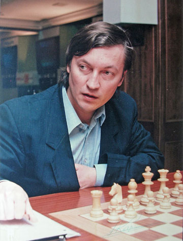

Mestres do Xadrez
| Periodo | Pais | Nome |
| 1886–1893 | Áustria-Hungria | Wilhelm Steinitz |
| 1894–1920 | Alemanha | Emanuel Lasker |
| 1921–1926 | Cuba | José Raúl Capablanca |
| 1927–1934 | França | Alexander Alekhine |
| 1935–1936 | Holanda | Max Euwe |
| 1937–1946 | Russia(União Soviética) | Alexander Alekhine |
| 1961–1962 | Russia(União Soviética) | Mikhail Botvinnik |
| 1963–1968 | Russia(União Soviética) | Tigran Petrosian |
| 1969–1971 | Russia(União Soviética) | Boris Spassky |
| 1972–1974 | Estados Unidos | Bobby Fischer |
| 1975–1984 | Russia(União Soviética) | Anatoly Karpov |
| 1985–1992 | Russia(União Soviética) | Garry Kasparov |
Todos são campeões, dentre eles os mais conhecidos e considerado dentre todos os melhores:
Bobby Fischer - Fischer demonstrava uma habilidade natural para o xadrez desde cedo.Aos 13 anos,
venceu a chamada "Partida do Século" contra Donald Byrne. Começando em 1957,aos 14 anos,
participou de oito Campeonatos de Xadrez dos Estados Unidos, vencendo todos com pelo menos
1 ponto de vantagem sobre seus oponentes. Aos 15, Fischer tornou-se o grande mestre de xadrez
mais novo da história até então e o candidato mais novo ao campeonato mundial.
Anatoly Karpov - Sagrou-se campeão mundial juvenil em 1969 e obteve o título de Grande Mestre em 1970.
Ao vencer o Torneio Interzonal de Leningrado (1973), qualificou-se para disputar, no ano seguinte,
o Torneio de Candidatos, que consistia em uma série de matches eliminatórios cujo vencedor apontaria
o desafiante ao título mundial. Karpov derrotou, sucessivamente, a Lev Polugaevsky, Boris Spassky e
Viktor Korchnoi, obtendo assim o direito a um match pela coroa suprema contra o então campeão,
o estado-unidense Bobby Fischer.

Defesa do titulo de Campeão mundial de Xadrez(1975):
Vitoria De Karpov Por (W/O)